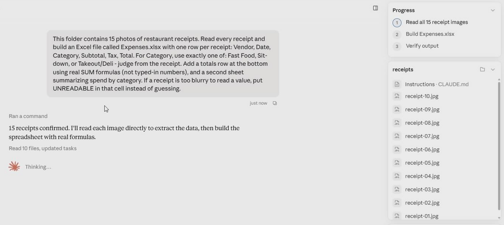
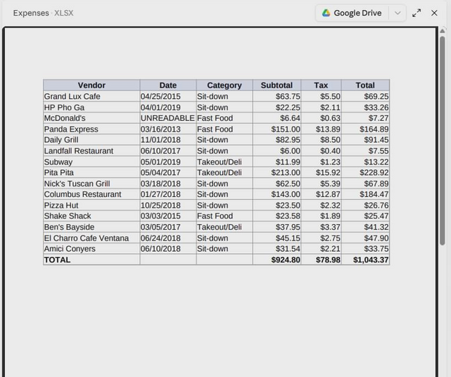

Demo 2 · Cowork
Photos to spreadsheet
In 10 minutesFifteen photos of real, crumpled restaurant receipts turned into a formatted Excel expense report — by one instruction.
No Cowork tab? See check 3 on the start page before downloading.
Download the receipts (ZIP, 1.3 MB)
Turn on Cowork — first time only
The first time you open the Cowork tab, Claude has to switch on one piece of Windows it works inside — a built-in feature called Virtual Machine Platform. You approve it once, restart the PC once, and never see it again. On Windows 11 it goes like this:
- Click the Cowork tab. Instead of opening, it tells you it needs Virtual Machine Platform and offers to set it up — say yes.
- Windows asks for permission — the usual "allow this app to make changes to your device?" box. Click Yes.
- Restart the PC now (Start → Power → Restart). This is the step people skip: Windows only switches the feature on during a restart, so until you restart, Cowork just stays stuck.
- After the restart, open Claude Desktop and click Cowork again. This time it opens a real session — done for good.
No prompt? An error? Still stuck after restarting?
Turn the feature on by hand — four clicks, fixes most cases:
- Press Start, type
windows features, and open Turn Windows features on or off. - Tick the box next to Virtual Machine Platform — just that one, leave the rest alone — and click OK.
- Let Windows apply it, click Restart now, then reopen Claude Desktop → Cowork.
The permission box wants an administrator password you don't have? The machine is managed — ask your IT support (or whoever manages it) to turn on "Virtual Machine Platform" for you. After their change and one restart, Cowork works.
Feature's on, you restarted, and Cowork still won't start? A few PCs ship with hardware virtualization turned off in the machine's firmware (BIOS). Don't chase that one solo — tell IT "Cowork needs virtualization enabled in BIOS", and do Demo 1 while you wait; Chat needs none of this.
Steps
- Download the ZIP, then in your Downloads folder right-click → Extract All… → Extract. You'll get a
receiptsfolder with the 15 photos, right next to the ZIP. (Double-clicking the ZIP looks like a folder of photos, but it isn't one — Cowork can't use it. Extract first.) - In Claude Desktop, switch to the Cowork tab and start a new session. (Asks to set up Windows instead of opening? That's the one-time setup above — one approval, one restart.)
- When Cowork asks which folder to work in, choose Downloads → receipts.
-
Paste this and hit Enter:
This folder contains 15 photos of restaurant receipts. Read every receipt and build an Excel file called Expenses.xlsx with one row per receipt: Vendor, Date, Category, Subtotal, Tax, Total. For Category, use exactly one of: Fast Food, Sit-down, or Takeout/Deli — judge from the receipt. Add a totals row at the bottom using real SUM formulas (not typed-in numbers), and a second sheet summarizing spend by category. If a receipt is too blurry to read a value, put UNREADABLE in that cell instead of guessing.Now watch. Cowork opens each photo, reads it, and builds the spreadsheet. Along the way it may pause to ask a question or for a go-ahead — read what it says and answer in plain English; that is the skill. If it seems to stall partway, type
continue.
Cowork reads each receipt and tracks its own progress — pausing to ask before big steps.
-
When it finishes, open
Expenses.xlsxfrom the folder.
Expenses.xlsx — one row per receipt, real SUM formulas, UNREADABLE where a photo was too blurry.
No Excel on this machine? Go to office.com, sign in with your UChicago account, and upload Expenses.xlsx — it opens in Excel for the web.
Yours won't match this cell-for-cell — a couple of receipts are genuinely ambiguous (one adds a 40% service charge, another has two separate taxes). That's the point of the next step.
Don't take the first answer — push back
You'd never sign an expense report you hadn't checked. Same here:
How did you handle the receipt with the 40% service charge — is that in the Total or not? And show me any row where you weren't sure of a number.
Claude shows its reasoning, you make the call, it fixes the sheet. That back-and-forth is the whole job — you own the result, Claude does the typing.
Yes, this is allowed on your UChicago enterprise account. For real financial or personal data, check UChicago's AI guidance first.
Your turn
Any folder of anything → any file you wish existed. A folder of PDFs → a summary doc. A folder of meeting notes → an action-item tracker. Describe the end product, keep the "if you're not sure, say so" guardrail, and let Cowork do the walking — then check its work.
When the task is bigger — real data you'll re-run every month — that's an Automate. Last page.
Next: 3 · Code — kill a monthly chore
Receipt photos: "A labeled dataset of hand-captured images of restaurant receipts" (Zenodo), CC-BY-4.0 — an extension of the ExpressExpense SRD.